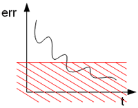

Torna alla pagina di Sistemi Intelligenti
:: Sistemi Intelligenti - Appunti del 13 Ottobre ::
La lezione di oggi è stata tenuta - cos'è, un vizio?! - dal prof Ferrari.
Settimana scorsa parlavamo di backpropagation, e la usavamo per addestrare le nostre reti neurali feedforward. Per affrontare l'argomento riprendiamo la parte finale della scorsa lezione.
Consideriamo la cosa da un punto di vista grafico. Ammettiamo di conoscere l'andamento dell'errore (er) rispetto ad un certo parametro (par) secondo questa forma:

Se sappiamo di essere nel punto (a), possiamo chiederci in che direzione dovremmo muoverci per migliorare la soluzione: aumentiamo o diminuiamo il valore del parametro? Per decidere basta calcolare la derivata della funzione in quel punto e regolarci in base ad essa. Nell'esempio sopra ci spoteremo verso sinistra.
Introduciamo a questo punto il problema dei minimi locali, che abbiamo già accennato all'inizio della lezione. Per capirli facciamo un nuovo esempio:

Se ci troviamo nel punto (a) è logico immaginare che ci sposteremo nel punto (b) e qui ci fermeremo, anche se in (c) si avrebbe una soluzione migliore.
Altro problema: di quanto ci dobbiamo spostare a destra o a sinistra? Se troppo poco rischiamo di rimanere bloccati in un punto, se troppo rischiamo di saltare dei minimi appetitosi. La scelta non è affatto banale.
Ricapitolando, se localmente so decidere con una certa facilità in che verso muovermi, non so né di quanto e né se ci potrebbero essere soluzioni locali migliori (magari dei minimi globali).
A tutto questo si tenta di far fronte con la tecnica del gradiente, nel quale ha capitale importanza il delta rule, ovvero la regola che mi permette di spostare il parametro nella direzione opposta a quella del gradiente. Perché bisogna comportarsi così? Perché il minimo locale ha sempre direzione opposta rispetto a quella della derivata.
Il parametro η della formula tratta dalle slide di Ferrari (che non vedremo mai), rappresenta il valore di aggiornamento dei pesi: più il numero è piccolo e più saranno i passi necessari per l'addestramento stesso. Non c'è modo di conoscere il valore ottimale per η, perché non conosciamo esattamente la funzione dell'errore; del resto, se la conoscessimo esattamente non staremmo qui a fare la backpropagation come tanti coglioni.
Quanto deve durare l'addestramento? Quanti passi devo fare prima di fermarmi?
Per rispondere a queste domande ci sono diverse tecniche basate sull'errore. Prima di studiarle chiariamo bene cosa intendiamo per errore.
Siano dati:
Grazie alle informazioni del dataset riusciamo a individuare diversi punti nello spazio (quello bidimensionale ingressi-uscite), e ciò che chiediamo alla rete è la funzione che potrebbe averli generati. Questa però non è unica, dunque è lecito chiedersi qual è la migliore. E' proprio a questo punto che diventa necessario il concetto di errore, calcolato come:
E = (y - y')2
dove y'i = RN(xi), ed E è la capacità della rete di approssimare l'esempio i-simo
Per estensione possiamo definire l'errore globale come:
Questo valore misura quanto la rete è in grado di approssimare il dataset. Spesso si aggiunge un 1/2 prima della sommatoria, così che quando andiamo a derivare l'errore possiamo semplificarlo con il 2 che scende dal quadrato della differenza. Questo accorgimento non è fondamentale, ma semplifica comunque qualcosina.
Se l'errore globale è basso allora immagino che la funzione sia approssimata bene.
All'inizio dell'addestramento l'errore globale è massimo, e poi nel tempo scende.
| Teoricamente si comporta così | ...mentre in pratica fa così |
In ogni caso l'algoritmo ci assicura che arriveremo almeno ad un minimo locale.
Bene, ora vediamo quali sono le tecniche di interruzione dell'algoritmo di backpropagation basate sull'errore:
| 1. numero di cicli: | |
| 2. soglia di errore Viene usata spesso quando dobbiamo sviluppare applicazioni che hanno tra le specifiche un valore di accuratezza da garantire |  |
| 3. variazione dell'errore: Si ispira al grafico ideale: quando l'errore si avvicina al minimo globale asintotico, interrompo l'algoritmo. Il problema di questo metodo è quando ci troviamo davanti un andamento dell'errore a gradini, con minimi locali a catena (vedi esempio accanto). Mettendo infatti un limite alla variazione con cui l'errore si manifesta, ci fermeremmo subito al primo gradino. |
Per migliorare la faccenda ci sono varie tecniche ed accorgimenti. Uno di questi tiene in considerazione il problema dell'aggiornamento dei pesi, e propone due soluzioni:
Un altro miglioramento da introdurre nel nostro modello è la tecnica dei momenti, che permette di evitare problemi come le oscillazioni attorno un minimo locale, o la lentezza dell'apprendimento. In formula:
In questo modo introduciamo una sorta di inerzia della variazione del peso: la variazione precedente smorza un po' eventuali divergenze con quella attuale, mentre enfatizza le convergenze.
Osserviamola in azione:
|
Come si può vedere l'algoritmo oscilla attorno al valore ottimale, e ciò è male perché perdo solo tempo. | -> |
Aggiungendo il momento la variazione precedente influenza l'attuale e quindi raggiungo più velocemente il minimo. |
Altro esempio:
|
Arriviamo ad un minimo locale molto peggiore dell'ottimo globale poco più a destra. | -> |
Aggiungendo il momento si possono evitare le trappole del minimo locale. |
L'ultima tecnica migliorativa dell'algoritmo (anche se non necessariamente legata alla backpropagation) è il simulated annealing, per il quale attendiamo le slide.
L'unico parametro che possiamo considerare per valutare la rete neurale è l'errore globale. Bisogna infatti tener conto che tutto ciò che abbiamo a disposizione sono solo esempi, dunque affetti da rumore e che danno una conoscenza limitata della funzione.
L'errore sperimentato durante l'addestramento è limitato al dataset di training, che può essere minimizzato semplicemente avendo a disposizione un po' di risorse di calcolo. Il problema è che la funzione da creare assomiglia proprio ai dati, li approssima, dunque non possiamo basarci solo su questi.
Inoltre minimizzare l'errore di training può portare all' overfitting: troppa aderenza ai dati degli esempi, che comporta una perdita di generalizzazione.
Quando abbiamo un insieme limitato di dati la cosa migliore da fare sarebbe spezzare il dataset in almeno due blocchi: uno da utilizzare come dataset vero e proprio, l'altro come esempi di verifica. Dal D iniziale otterremo dunque:
L'errore quindi si sdoppia! Avremo:
Poiché EV non è calcolato sui dati usati per costrure la funzione, ma su altri tenuti sapientemente da parte, è dei due quello più affidabile. Anzi, di più: è l'unico tipo di errore che ha senso verificare.
Potrebbe sembrare ovvio che saremo contenti quando EA = EV, ma anche se è vero in generale in alcuni casi è negativo: se la rete fa schifo, faranno schifo entrambi. A ogni modo, statisticamente vale il concetto che se EA è diverso da EV, allora è probabile che soffriamo di overfitting o altre paturnie.
Se EV è molto maggiore di EA possiamo modificare il modello della rete e rifare l'addestramento, possibilmente ritoccando qualche parametro così da migliorare la risposta; operazione da ripetere finché i due errori non si assomiglieranno. Fermi tutti: siamo sicuri che questo sia ciò che vogliamo?? No, perché in questo caso avremo tenuto conto di DV per l'addestramento, ed era proprio quello che dovevamo evitare (ok, non l'avremo fatto nella backpropagation, ma subito dopo). Allora cosa facciamo? Speziamo il dataset in tre parti:
Con che percentuali ripartisco il dataset di partenza nei tre appena elencati? Per esperienza, per essere sicuri che la rete non faccia overfitting va riservato un elevato numero di DV e DM. E' vero anche che in questo modo avremo pochi esempi per il training, quindi rischiamo di ottenere una funzione poco affidabile. Siamo quindi al solito ritornello: non ci sono regole precise, si deve procedere per tentativi.
Se disponiamo di un dataset bello corposo e la rete non è troppo grande, vale comunque la pena riservare molti esempi come test: alla fine è l'unico a fornirci un parametro credibile per misurare le performance!
I dati sono caratterizzati da:
Il paradigma matematico che usiamo per approssimare la rete ha come caratteristiche:
Le caratteristiche di dati e tipologia di rete non sono scollegati, anzi! In particolare, la scelta del numero di parametri deve essere limitata fortemente da quello degli esempi, e deve tenere in alta considerazione anche delle entità degli errori. Per riuscirci ci vuole esperienza, tentativi e fortuna.
..che non verrà mai approfondito nelle lezioni seguenti, ma dato per fatto.
In ogni caso l'idea che sta dietro a questo dilemma è che abbiamo due tipi di errore: uno che cresce all'aumentare del numero di parametri, e l'altro il contrario. In particolare la componente Bias tiene conto dell'errore legato alla struttura della rete, mentre la Variance è più legata all'overfitting.